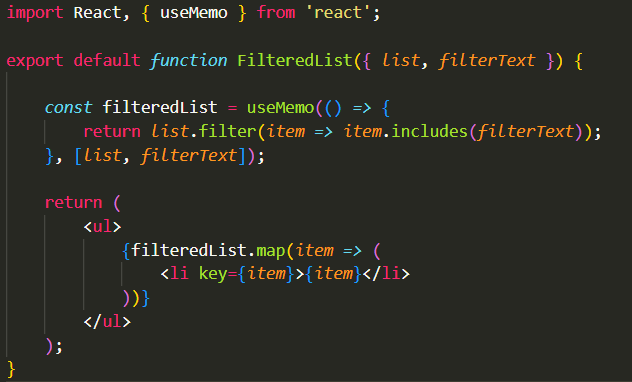

Lists and Hooks
REACT-JS ASSIGMENT
Explain Life cycle in Class Component and functional component with Hooks
CLASS COMPONENT
↠ A class component in React is a way of defining a component using ES6 classes.
↠Class components are more complex than functional components but provide more features, including the ability to hold and manage local state and access lifecycle methods.
↠ In the class component we have three phase and several method
↠ MOUNT
↠ Mounting is the stage when the component is being created and inserted into the DOM.
- constructor(props):Used for initializing state or binding event handlers to the instance.
- static getDerivedStateFromProps(props, state):Used to update the state in response to a change in props
- render():Responsible for returning JSX.
- componentDidMount():Invoked immediately after a component is mounted.
↠ Updating
↠ Occurs when the component's props or state change.
- shouldComponentUpdate(Props, State)
- getSnapshotBeforeUpdate(Props,State)
- getSnapshotBeforeUpdate()
- componentDidUpdate()
- render():Responsible for returning JSX.
↠ unmounting
- componentWillUnmount()
FUNCTIONAL COMPONENT
↠ ReactJS Functional components are some of the more common components that will come across while working in React
↠These are simply JavaScript functions
↠ We can create a functional component in React by writing a JavaScript function.
↠ USESTATE
↠ the React useState Hook allows us to track state in a function component.
↠ useState has a two parameter:value and function
↠ USEEFFECT
↠ The useEffect Hook allows you to perform side effects in your components.
↠ useEffect accepts two arguments. first is function and second is dependency
↠ CONTEXT
↠ React Context is a way to manage state globally.
↠ It can be used together with the useState Hook and easily manage nested component

↠ USEREF
↠ The useRef is a hook that allows to directly create a reference to the DOM element
↠ USEREDUCER
↠ The useReducer Hook is similar to the useState Hook.
↠ It can be used together with the useState Hook and easily manage nested component
↠ USECALLBACK
↠ The useCallback hook in React is a way to remember and reuse functions in your components.
↠It helps to optimize performance.
↠ USEMEMO
↠The useMemo hook in React is like a smart memoization tool.
↠The useMemo Hook only runs when one of its dependencies update. This can improve performance.
